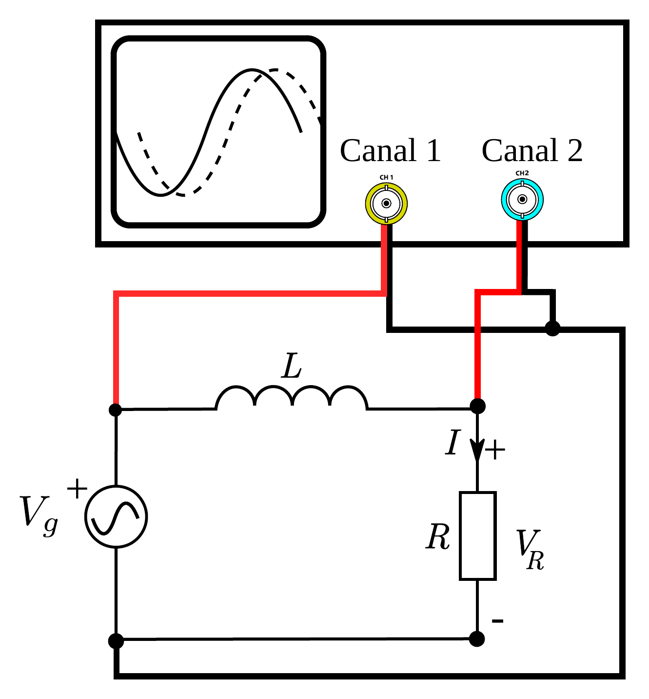
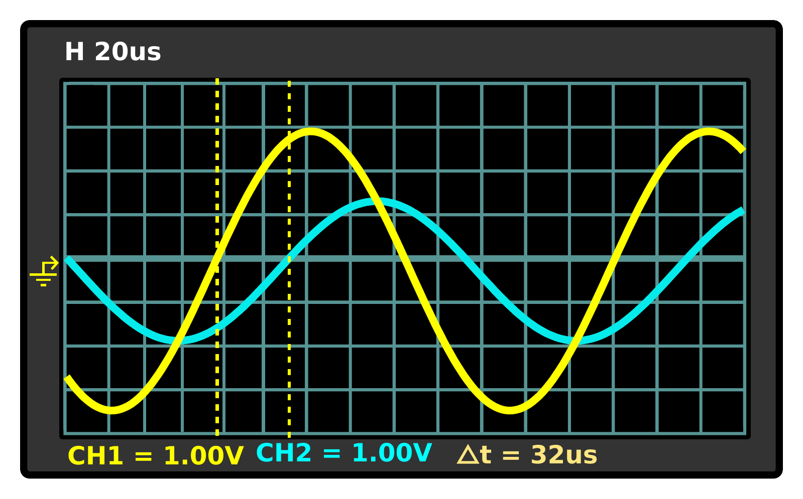

En esta práctica se estudia el comportamiento de los componentes pasivos alimentados en corriente alterna. El objetivo de la práctica es medir la impedancia compleja equivalente de circuitos formados por bobinas y resistencias alimentados en corriente alterna.
Fundamento teórico
Los elementos pasivos se comportan de una manera peculiar cuando se alimentan con una corriente alterna. Los elementos tales como los condensadores e inductancias, provocan desfases entre la onda de corriente y tensiones. Los modelos matemáticos con números complejos permiten simplificar el estudio de dichos componentes en corriente alterna.
Una bobina alimentada en alterna introduce un desfase entre la tensión y la corriente en sus bornes de π/2 rad y tiene una impedancia equivalente compleja:
ZL=jLω(6.1)
Siendo ω=2πf la frecuencia ángular del generador y L el coeficiente de autoinducción de la bobina.
La asociación de varios componentes lineales lleva a una impedancia compleja equivalente Z. Esta impedancia, una vez alimentada por una fuente de tensión V~g puede relacionarse con la corriente mediante la ley de Ohm:
V~g=ZI~(6.2)
Si conocemos la impedancia y la tensión del generador podemos determinar la corriente. También podemos determinar la impedancia equivalente a partir de la medidas de corriente y tensión eficaz y del desfase entre tensión y corriente. Tenemos:
∣Z∣=I~V~g,(6.3)
es decir podemos obtener el módulo de la impedancia a partir de la tensión y corriente eficaz. Por otro lado:
arg(Z)=arg(I~)arg(V~g)=ϕV−ϕI=Φ(6.4)

Figura 6.1: Esquema del circuito LR con un osciloscopio.
En esta práctica se van a identificar las impedancias equivalentes a partir de medidas de tensión, de corriente y de desfases. Las tensiones y corrientes eficaces se van a medir usando el osciloscopio.
Las medidas de amplitud eficaz de las ondas y de desfase se pueden obtener con un osciloscopio. En el circuito de la figura 6.1 se representa un circuito con una resistencia en serie con una inductancia. Cuando el generador que alimenta el circuito es de tensión alterna, el circuito tiene una impedancia equivalente Zeq vista del generador:
Zeq=R+jLω(6.5)
Para medir Zeq con un osciloscopio se puede medir con el canal 1 la señal del generador y con el otro canal la señal de la resistencia. Una medida cuidadosa de la diferencia de fase nos permitirá encontrar el valor de la impedancia equivalente con las fórmulas (6.3) y (6.4).
Montaje experimental y Resultados
Montaje experimental
Se va a realizar el montaje de la figura 6.1 conectando el canal 1 al generador y el canal 2 a la resistencia.
Medida de diferencia de fases

Figura 6.2: Desfase entre dos ondas de misma frecuencia. La onda de la tensión de la resistencia está en atraso con respeto a la onda de tensión del generador.
Los desfases entre diferentes tensiones se van a medir con un osciloscopio de la siguiente manera:
En el canal 1 se visualiza la señal del generador.
En el canal 2 visualizar la señal de la resistencia.
Ajustar los controles hasta visualizar correctamente las dos señales (para dudas sobre el manejo del osciloscopio ayudarse de la práctica de manejo básico del osciloscopio).
Activar los cursores verticales para medir la diferencia de tiempos entre las ondas.
Medir la diferencia de tiempo entre las dos formas de onda. Por ejemplo, puede fijarse en el cruce del eje de tiempo horizontal y medir esta diferencia tal como se muestra en la figura 6.2.
Para obtener el desfase en radianes a partir de la diferencia de tiempo Δt medida se aplica la siguiente fórmula:
Δφ=2πTΔt,(6.6)
siendo Δt el desfase entre las dos señales y T el periodo de la señal.
El desfase entre tensión y corriente es entonces Δφ=φV−φI. Este desfase es positivo si la corriente está en atraso con respeto a la tensión (φI<φV) y es negativo si la tensión está en atraso con respeto a la corriente.
Medida de amplitudes
Para medir las amplitudes de las dos señales se usa el método siguiente:
En el canal 1 se visualiza la señal del generador.
En el canal 2 visualizar la señal de la resistencia.
Ajustar los controles hasta visualizar correctamente las dos señales (para dudas sobre el manejo del osciloscopio ayudarse de la práctica de manejo básico del osciloscopio).
Activar los cursores horizontales para medir la diferencia de potencial cresta a cresta de una onda.
Medir la tensión ΔVpp, tensión de cresta a cresta o de pico a pico de la señal. Esta diferencia representa dos veces la amplitud VA:
ΔVpp=2VA.(6.7)
La tensión eficaz de la señal sinusoidal es:
Vef=22ΔVpp.(6.8)
Circuito LR
Realizar el circuito de la figura 6.1 con los siguientes valores de los componentes: R=1kΩ, L=10mH. Fijar el generador de tensión sinusoidal con una frecuencia de 50kHz y una amplitud de 2V (se puede elegir otra amplitud, no cambiará el resultado).
Medir las siguientes variables del circuito:
La frecuencia f0 y la amplitud eficaz Vg de la señal del generador (usar el osciloscopio).
La tensión eficaz de la tensión de la resistencia.
Para medir la corriente podemos medir con precisión el valor de la resistencia con un polímetro. Se deduce la corriente usando la ley de Ohm: Ief=Vef/R.
Medir el retardo Δt entre la tensión del generador y la tensión de la resistencia, y calcular el desfase φVg−φVR correspondiente.
f0 (Hz)
Vg (V)
VRef (V)
R (Ω)
Ief (mA)
Δt (s)
φVg−φVR (rad)
±εf0 (Hz)
±εVg (V)
±εVRef (V)
±ε∣Zeq∣ (Ω)
±εIef (mA)
±εΔt (s)
±ε(φVg−φVR) (rad)
Realizar las siguientes tareas usando las medidas anteriores:
Representar las ondas VR(t) y Vg(t) en una única gráfica con sus correspondientes escalas (se pueden realizar capturas de datos con el osciloscopio).
Usando únicamente las medidas anteriores de tensión, corriente y diferencia de fase calcular la impedancia compleja equivalente del circuito formado por la resistencia y la inductancia con la ayuda de las fórmulas (6.3) y (6.4):
∣Zeq∣ (Ω)
±ε∣Zeq∣ (Ω)
arg(Zeq) (rad)
±εarg(Zeq) (rad)
Calcular el valor de la impedancia compleja usando la expresión teórica de Zeq y el valor de los componentes medidos con un polímetro y usando el valor de la frecuencia medida con el osciloscopio:
R (Ω)
±εR (Ω)
L (H)
±εL (H)
ω0 (rad·s−1)
±εω0 (rad·s−1)
Zeq (Ω)
±εZeq (Ω)
Incluid una foto con los cálculos a mano.
Comparar el resultado experimental con la impedancia del cálculo teórico anterior.